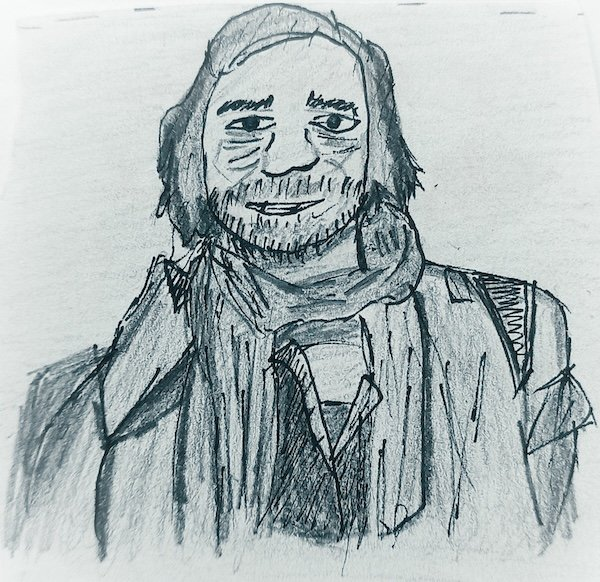

Amor: Sentimiento recíproco entre dos personas, o de una persona con una pasión que le hace feliz sin hacer daño a nadie. No hay amores que matan; el amor siempre hace crecer.
Arte: Percepción que uno siente con envidia cuando lee algún libro de Nabokov (por ejemplo), cuando contempla un cuadro de Vermeer (por ejemplo), cuando escucha una canción de Cohen (por ejemplo) o el Quinteto para piano de Shostakovich (por ejemplo), por citar solo algunos ejemplos.
Autor: Personaje afortunado que tiene determinación y paciencia para imaginar y escribir historias más o menos originales, y que es deudor de todo lo que se ha escrito y que ha podido leer antes que él.
Aventura: Vivir ya es una aventura. En nuestro mundo cómodo y seguro, corremos el peligro de convertirlo en algo rutinario.
Biografía (mi): Para biografías, las de Poe, Stevenson, Kafka… Algunas personas están interesadas en conocer detalles sobre mi vida, que no tienen mayor importancia. Más que ese relato, prefiero enumerar lo que otro escritor denominó "los ingredientes de la vida", que es el conjunto de personas, cosas y sentimientos que a uno le caracterizan: Sole-Daniel-Claudia, amigos y amigas en una breve pero entrañable lista, lectura, escritura, música, conversaciones con un buen vino, la isla del tesoro, Sáhara, Cuba, rabia, colegas de escritura (Gonzalo-Carlo), matemáticas y ciencia, paseos por un bosque…
Canon (digital o bibliotecario): Impuesto permitido por las autoridades económicas europeas, con el que se beneficia a ciertas sociedades de gestión intelectual (¡!) con la presunta intención de repartir beneficios entre sus asociados, en lugar de promover una difusión más libre, generalizada y barata de la cultura, lo que redundaría directamente en beneficio de los creadores, si es de lo que realmente se trata. Representa una de las medidas más idiotas del liberalismo extremo; dentro de poco pagaremos un canon por contemplar un atardecer.
Ceguera: Siempre me llamó la atención el mundo de las personas cuyos sentidos son diferentes de los míos, porque sospecho que su percepción del universo puede ser más rica. En El cazador de estrellas, Hamida representa el anciano que permite ver más allá de lo que alcanza la vista, con la sabiduría asignada a los viejos ciegos en la literatura árabe. En Ojo de Nube me atreví a imaginar que la palabra por sí sola puede describir el mundo.
Ciencia: En mi infancia estaban de moda los viajes espaciales, dentro de la competición políticoideológica entre la Unión Soviética y Estados Unidos; de niño yo quería ser astronauta, y de adolescente, astrónomo. Me quedaron como huella los viajes a la Luna, al centro de la Tierra y las veinte mil leguas de viaje submarino, de Verne. La historia de la ciencia y, en particular, de las matemáticas, me resulta apasionante. Defiendo el conocimiento y la divulgación científica como manera de acercarse a la comprensión del mundo, en el que somos apenas partículas de polvo.
Compromiso: Yupanqui lo cantaba así: "Si uno canta coplas de amor / de potros, de domador / del cielo y las estrellas / dicen: 'Qué cosa más bella / si canta que es un primor'. / Pero si uno como Fierro / por ahí se larga opinando / el pobre se va acercando / con las orejas alertas / y el rico bicha la puerta / y se aleja reculando." El compromiso es una opción personal, pero en un mundo como el que vivimos no entiendo que el intelectual (¡palabra manida, que ha perdido significado!) no denuncie la injusticia, que tiene consecuencias genocidas. Hoy, quien calla es cómplice, por más que algunos se empeñen en que tengamos la boca cerrada.
Cuento: Historia en la que un personaje, más o menos real, sufre avatares más o menos reales. A veces, los cuentos se parecen a la vida misma. De pequeño, me encantaba que me contaran cuentos; nunca está mal pedirle a alguien "¡Por favor, cuéntame un cuento!"
Deseo: Fase superior de las aspiraciones humanas, cuando uno tiene satisfechas las necesidades. No concibo vivir sin deseos, aunque no creo en la condición de satisfacerlos todos; una buena tolerancia a la frustración es más que conveniente.
Dinero: Algunas personas piensan que todo se puede comprar con dinero, y son unos arrogantes. Otros opinan que tienen derecho a comprar todo lo que pueden pagar, y son unos insensatos.
Editorial: Empresa encargada de satisfacer los deseos de muchos autores, para bien de la cuenta de resultados de ambos, lo que se considera lícito. En las editoriales uno puede encontrar editores, seres humanos que en ocasiones ponen en juego criterios estéticos y artísticos.
Educación: Algo que se encarga fomentar exclusivamente en la escuela, como si el resto de la sociedad (medios de comunicación, políticos, personajillos de televisión, conductores de automóviles, empresarios, padres…) no tuviera que ver con ello.
Escritura: Descubrí muy tardíamente la pasión por la escritura, porque publiqué mi primer libro pasados los cuarenta, al poco de empezar a escribir. Sin embargo, no añoro haber comenzado antes, porque tengo la sensación de haber estado ocupado en otros asuntos apasionantes y con los que he disfrutado mucho. En los encuentros que realizo con lectores siempre les invito a que escriban porque me parece un ejercicio de autoconocimiento, de rebeldía y de libertad.
Escuela: Cuando yo tenía siete años, en la escuela había una estufa que se debía encender por las mañanas; en la hora del recreo tomábamos leche en polvo. Socialmente, debían ser tiempos muy duros, pero mi recuerdo de aquel período es fantástico. La maestra, doña Dionisia, nos contaba historias, unas sagradas y otras no. Muchas noches no podía dormir pensando que de la cabecera de mi cama colgaba la espada de Damocles. Lo que había que aprender entonces estaba desdibujado y cabía todo en una enciclopedia. Hoy la escuela ha cambiado mucho; todo está clasificado en libros distintos y fragmentado en períodos de cincuenta minutos. Interesa sobre todo que los futuros ciudadanos aprendan inglés e informática, que se consideran saberes de prestigio.
Felicidad: En su estado extremo, situación cercana a la estupidez. Cuando se trata de un estado transitorio, sensación de beatitud que normalmente se alcanza mediante cosas sencillas, como la contemplación de un atardecer, el encuentro con alguna persona querida o, si se es fumador, un pitillo relajado.
Fomento de la lectura: Lo que hacen muchos profesores en sus aulas y muchos bibliotecarios en sus bibliotecas. También, algunos escritores con sus libros.
Géneros literarios: De todos los posibles, practico habitualmente la narrativa, aunque he hecho incursiones y excursiones por la poesía.
Haber: En mi haber tengo muchas personas a las que quiero y que me quieren, entre ellas dos hijos de los que me siento muy orgulloso porque son muy buenas personas. Como nací en una época y un continente privilegiados, disfruto de otros muchos placeres (tiempo libre, música, cine, fotografía…) sin la necesidad de resolver incógnitas acuciantes, como saber si voy a poder cenar esta noche o si mañana me pegarán un tiro por la calle.
Ilustrador: Personaje afortunado que tiene el don de trasladar al papel manchas y dibujos que son fragmentos de vida, real o figurada.
Lector: Personaje afortunado que disfruta o padece solidariamente, según los casos, con personajes imaginados por autores o ilustradores, con el propósito de trascender su propia existencia y profundizar en el conocimiento de mundos reales o imaginarios.
Literatura infantil, literatura juvenil: Todo lo que uno lee con intención de pasar un buen rato cuando se es niño o joven. Caben desde obras ad hoc a historias creadas por Homero, Dostoyevski, Melville, Poe, Kafka… y todo lo demás en un extenso etcétera. Hay quien piensa que la LIJ es un género menor, cosa que sorprendentemente está arraigada entre algunos escritores de LIJ, una vez que consiguen publicar en lo que se llama literatura adulta.
Literatura: Me ha acompañado siempre. De muy pequeño, mi abuelo me llevaba a pasear y me contaba historias; también lo hacía al anochecer, al calor del fuego, o en los lentos y cinematográficos atardeceres de las tardes de Castilla, sentados los dos en el poyete que había a la entrada de su casa de pueblo. Más adelante, me emancipé y comencé a leer por mí mismo, y de todo. Sigo buscando y descubriendo.
Maestro: (V. también Escuela). Algo más tarde, ya en el curso de ingreso, tuve como maestro a don Fermín, que nos hacía aprender de memoria los lagos de Europa (Ladoga, Onega…) y, sobre todo y sorprendentemente, poemas de Antonio Machado. Entonces no entendía que aquel hombre debía ser un personaje singular, porque don Antonio era un poeta prohibido por el régimen. Yo he tenido la suerte de tener maestros más buenos que malos. Incluso en fechas tan tardías como el preu, recuerdo a una profesora de literatura española contemporánea que se pasó el curso recitando e invitando aprender de memoria poemas de Cernuda, de Blas de Otero, de Lorca… Hoy, el maestro corre el riesgo de convertirse en un burócrata que debe cumplimentar actas, formularios, programaciones, estadísticas y boletines de evaluación; aunque aún quedan muchos ejemplares libres y rebeldes, de los que hacen soñar y que se comprometen con la auténtica educación. (Por una cuestión de discreción y justicia, no daré nombres de algunos de cuya amistad disfruto).
Mentira: Cualidad encarnada en algunas personas que aparecen de vez en cuando en los periódicos, y cuyo nombre no diré.

*Mi biografía: Mi biografía no tiene nada de apasionante y cuando me piden que hable sobre mí siento que apenas tengo nada que contar. Nací hace ahora 53 años en un pueblo de Segovia, aunque mi infancia y mi adolescencia transcurrieron en Madrid, en tiempos en que se jugaba en la calle y la televisión era un motivo de fascinación, porque los chicos y chicas nos reuníamos las tardes de los sábados y los domingos, después de comer, y veíamos una película antes de salir de nuevo a jugar. He leído bastante, pero siento que aún me queda mucho por aprender. He viajado un poco, y me gustaría conocer muchos más lugares del mundo. Siempre me interesó la ciencia. Pasado el tiempo, en una época en la que se consideraba que la educación podía cambiar el mundo, me convertí en profesor de matemáticas, terreno en el que creo haber hecho un buen trabajo porque la mayoría de mis alumnos y alumnas aprendieron y me recuerdan con afecto, creo. Pasados los cuarenta años me decidí a escribir. Comencé con relatos y novelas para adultos y pasado poco tiempo me centré en la LIJ, pero a mí me gusta la literatura fronteriza, que no tiene edad. Considero que cada libro es un peldaño hacia otro que espero sea mejor. Espero seguir escribiendo porque me apasiona y considero un privilegio poder hacerlo. Creo que hay que cambiar el mundo: hemos caído en la trampa de fomentar el éxito fácil, el consumismo, el miedo y una falsa seguridad. Me precio de tener amigos y entretenimientos variados, con los que disfruto mucho.
Muerte: Final de la novela de alguien.
Novela: Cuento largo o suma de muchos cuentos largos (V. Cuento).
Nushi: Personaje de Diario en un campo de barro, uno de mis libros. Como otros muchos de mis protagonistas (Bachir, Rubén, Fabio, Bruno, Ojo de Nube…) es casi una persona viva, porque me costó mucho trabajo y muchos meses inventar para ella una personalidad propia. Trato de que todos ellos sientan deseos y pasiones, miedos y aspiraciones; la mayoría de ellos tratan de comprender el mundo en que viven y se rebelan ante lo establecido.
Poesía: Literatura que normalmente se expresa en un cuaderno ajado, una libreta de bolsillo e incluso una servilleta, y que nace de un estado especial del espíritu. (A diferencia de otras escrituras, que pueden desarrollarse mejor en un ordenador, y que requieren una constancia notable y una paciencia infinita).
Política: Debería causar asombro que la mayor parte de los políticos que tienen en sus manos el destino de la Humanidad sean los personajes más corruptos, canallas e incultos del mundo en que vivimos. Lo que significa que algo estamos haciendo mal al dejar el poder en sus manos, y que habría que recuperarlo para rescatar el sentido de la palabra democracia, que como todo el mundo sabe significa "el gobierno de la gente sencilla".
Publicar: Aspiración de todo autor, aunque a veces se haga a costa de la literatura y en favor de la vanidad.
Razón: En singular, instrumento para conocer la verdad. Cuando se trata del plural (razones), conjunto de argumentos con los que unos se arman para desprestigiar a otros.
Realidad: Lo que uno cree que tiene a su alrededor, que no es más que una de las múltiples facetas de las realidades mundanas. La realidad es muy diferente para personas que viven en nuestro país, en Etiopía, en el Sáhara, en Irak, en Colombia, en Afganistán… Incluso en cada uno de estos lugares, la realidad es muy distinta según una persona sea hombre o mujer, niño o anciano, dominador o dominado.
Recomendaciones (otros autores, otras obras): Una enumeración exhaustiva sería larguísima; comprensivamente diré que soy más partidario de compartir que de recomendar, porque cada lector tiene derecho a fabricarse su propio corpus literario. Siempre estoy dispuesto a intercambiar con alguien un buen libro, un buen cómic o una buena película.
 **
**
Sáhara: Vergonzoso problema que no ha sido resuelto por la comunidad internacional pese a las numerosas resoluciones a favor de la autodeterminación. No se ha encontrado todavía ningún gobernante español que haya asumido las responsabilidades de nuestro pueblo con los saharauis.
Solidaridad: En algunas ocasiones, forma encubierta de caridad, que implica que uno da lo que le sobra o le estorba. Otras veces reviste unas formas más comprometidas, y hay quien se deja la piel solidaria y compasivamente con otros. Es conveniente que vaya acompañada por una buena dosis de crítica hacia el sistema establecido.
Técnica narrativa: Conjunto de cosas que uno hace desde que elige el tema y el personaje de una próxima novela hasta que la acaba. Dentro de mi técnica narrativa está el no dar a leer nada a nadie hasta que la considero terminada. Lo que más trabajo me cuesta es imaginar cómo sienten y piensan mis personajes (V. Nushi); a veces, el acercamiento a ellos me lleva meses. Luego, la escritura es relativamente fluida, aunque me cuestan mucho tiempo las revisiones y los ajustes finales, a los que dedico mucho tiempo. Suelo escribir sin prisas ni plazos.
Tiempo: Lo que normalmente a mí siempre me falta.
Trabajo: (Como se sabe, del latín trepalium, que era un instrumento de tortura). Actividad por la que, en condiciones normales, uno se desarrolla personal y socialmente, y por la que obtiene un dinero. En algunos casos, es difícil de diferenciar de la esclavitud o de la explotación.
Verdad: Lo que uno persigue después de mucho esfuerzo sin saber si va a poder alcanzarlo.
Vida: Novela sobre alguien, de la que a veces uno es autor y otras veces víctima. Cuando se trata de una novela larga, y de final feliz, la novela es asombrosa. En ocasiones, si el final es precipitado y la escritura sucia, la novela es digna de lástima.
(*) La caricatura me la entregó un chaval; se entretuvo en dibujarla mientras me escuchaba (se supone); no me quedé con su nombre, lo siento.
(**) El dibujo es de un amigo, Joaquín Secall: mis viajes al Sáhara, los libros del Bubisher... ¡Todo un regalo!
Puede que esto continúe…